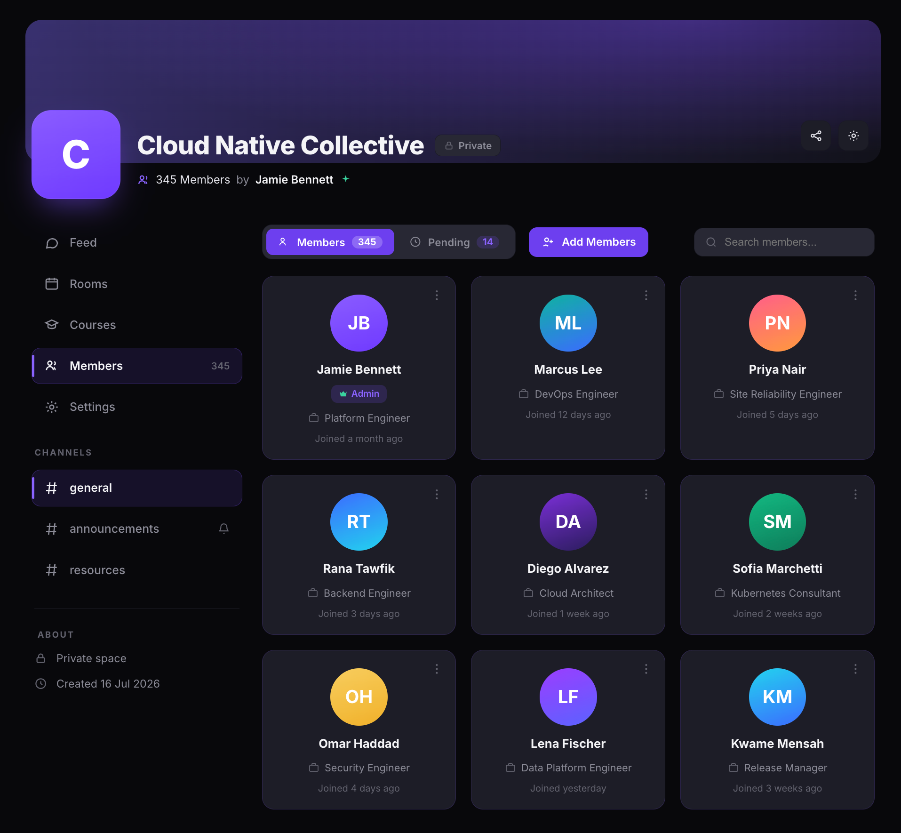
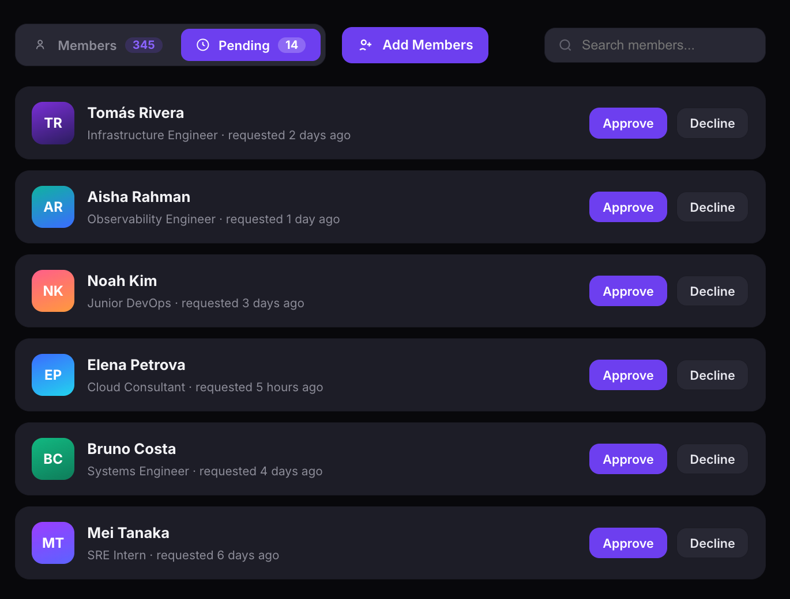
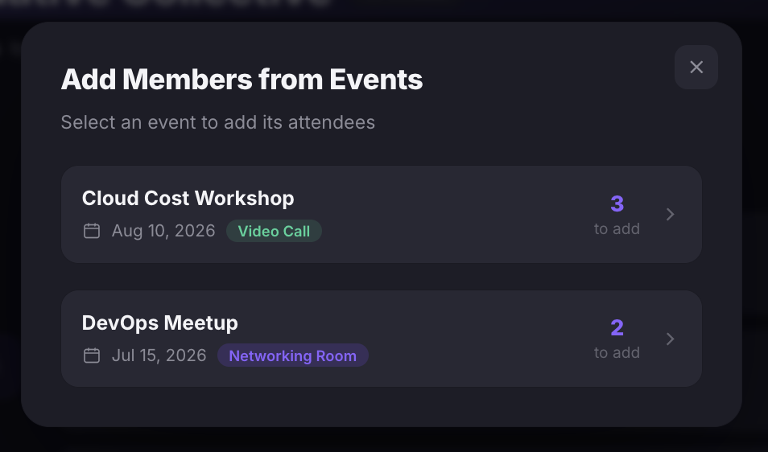

Manage community members
View your member list, approve or reject pending join requests, assign roles, add new members from events, and ban members who violate your community guidelines — all from the Members page.
Before you get started
- You must be a community Admin to manage members and assign roles.
Open the Members page
- Open your community.
- Click Members in the left sidebar. The badge shows your total member count.
The Members page has three controls at the top: Members (view all current members), Pending (view join requests awaiting approval), and Add Members (invite new people or add attendees from past events). Use the Search members... field to find a specific person.

View and manage members
- Click the Members tab to see all current members displayed as cards. Each card shows the member's avatar, name, role badge (if applicable), job title, and join date.
- Click the three-dot menu (⋮) on a member's card to see the available actions:
- Make Admin — promote the member to Admin with full community control.
- Make Moderator — promote the member to Moderator so they can manage sessions, rooms, and courses.
- Ban Member — remove the member from the community and prevent them from rejoining.

Approve or reject pending requests
- Click the Pending tab. The badge shows the number of people waiting for approval.
- Each pending request shows the person's avatar, name, job title, and how long ago they requested to join.
- Click Approve to accept the request and add them as a member.
- Click Decline to reject the request.

Tip: Pending requests only appear when your community's membership setting is set to Require approval. Communities set to Auto-approve accept all join requests automatically.
Add members from events
- Click Add Members at the top of the Members page.
- The Add Members from Events dialog shows past events linked to your community, with the event name, date, type (Video Call or Networking Room), and the number of attendees available to add.
- Click an event to add its attendees to your community.

Tip: Use Add Members from Events to quickly onboard participants who attended your sessions but haven't joined the community yet.